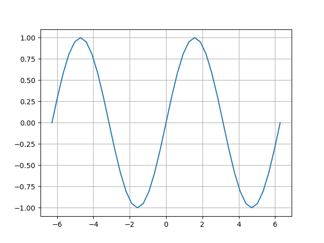

PyPlotによるグラフ描画
PyPlot.jl パッケージによるグラフ描画
Pythonには matplotlib という有名な描画ライブラリがあり， PyPlotというインターフェースを介してグラフを描画することができる．
ここでは，Juliaから PyPlotを呼び出すパッケージ（インターフェース） PyPlot.jl を使ってグラフを描画する方法を説明する．
PyPlot.jl は PyPlotのインターフェースなので，基本的には （Pythonの）PyPlotと同じ方法で動作する． 公式のチュートリアル に書いてあるPythonコードをJulia向けに少し書き直せばそのまま動く（はず）．
準備
Pythonライブラリを呼び出すためのPyCallと，matplotlibをあらかじめインストールしておく必要がある．
matplotlibのインストール
Python側でmatplotlibのインストールを行う．例えば，pipコマンドで次を実行する．
$ pip install matplotlibPyCallのインストール
Julia側でPyCallのインストールを行う． インストールの手順はこちらを参照． 基本的には pkg> add PyCall で問題なくインストールされるが． 環境によってはエラーが発生するようなので要注意．
PyPlot.jlパッケージの追加
PyCallとmatplotlibが適切にインストールされていれば特に問題なく終わるはず．
$ julia
julia> ]
pkg> add PyPlot
[...]動作確認として，$[0,1]\times [0,1]$内にランダムに10個の点を取り，順番に線を結んだグラフを描いてみる．
julia> using PyPlot[ Info: Precompiling PyPlot [d330b81b-6aea-500a-939a-2ce795aea3ee] ERROR: LoadError: LoadError: could not load library "/Users/oikawa/.julia/conda/3/lib/libpython3.9.dylib" dlopen(/Users/oikawa/.julia/conda/3/lib/libpython3.9.dylib, 0x0009): tried: '/Users/oikawa/.julia/conda/3/lib/libpython3.9.dylib' (mach-o file, but is an incompatible architecture (have (arm64), need (x86_64))). Please run `Pkg.build("PyCall")` if your Python build has changed Stacktrace: [1] error(::String, ::String) @ Base ./error.jl:42 [2] top-level scope @ ~/.julia/packages/PyCall/7a7w0/src/startup.jl:51 [3] include(mod::Module, _path::String) @ Base ./Base.jl:384 [4] include(x::String) @ PyCall ~/.julia/packages/PyCall/7a7w0/src/PyCall.jl:1 [5] top-level scope @ ~/.julia/packages/PyCall/7a7w0/src/PyCall.jl:38 [6] include @ ./Base.jl:384 [inlined] [7] include_package_for_output(pkg::Base.PkgId, input::String, depot_path::Vector{String}, dl_load_path::Vector{String}, load_path::Vector{String}, concrete_deps::Vector{Pair{Base.PkgId, UInt64}}, source::String) @ Base ./loading.jl:1235 [8] top-level scope @ none:1 [9] eval @ ./boot.jl:360 [inlined] [10] eval(x::Expr) @ Base.MainInclude ./client.jl:446 [11] top-level scope @ none:1 in expression starting at /Users/oikawa/.julia/packages/PyCall/7a7w0/src/startup.jl:41 in expression starting at /Users/oikawa/.julia/packages/PyCall/7a7w0/src/PyCall.jl:1 caused by: could not load library "/Users/oikawa/.julia/conda/3/lib/libpython3.9.dylib" dlopen(/Users/oikawa/.julia/conda/3/lib/libpython3.9.dylib, 0x0009): tried: '/Users/oikawa/.julia/conda/3/lib/libpython3.9.dylib' (mach-o file, but is an incompatible architecture (have (arm64), need (x86_64))) Stacktrace: [1] dlopen(s::String, flags::UInt32; throw_error::Bool) @ Base.Libc.Libdl ./libdl.jl:114 [2] dlopen(s::String, flags::UInt32) @ Base.Libc.Libdl ./libdl.jl:114 [3] top-level scope @ ~/.julia/packages/PyCall/7a7w0/src/startup.jl:48 [4] include(mod::Module, _path::String) @ Base ./Base.jl:384 [5] include(x::String) @ PyCall ~/.julia/packages/PyCall/7a7w0/src/PyCall.jl:1 [6] top-level scope @ ~/.julia/packages/PyCall/7a7w0/src/PyCall.jl:38 [7] include @ ./Base.jl:384 [inlined] [8] include_package_for_output(pkg::Base.PkgId, input::String, depot_path::Vector{String}, dl_load_path::Vector{String}, load_path::Vector{String}, concrete_deps::Vector{Pair{Base.PkgId, UInt64}}, source::String) @ Base ./loading.jl:1235 [9] top-level scope @ none:1 [10] eval @ ./boot.jl:360 [inlined] [11] eval(x::Expr) @ Base.MainInclude ./client.jl:446 [12] top-level scope @ none:1 ERROR: LoadError: Failed to precompile PyCall [438e738f-606a-5dbb-bf0a-cddfbfd45ab0] to /Users/oikawa/.julia/compiled/v1.6/PyCall/jl_qXX67L. Stacktrace: [1] error(s::String) @ Base ./error.jl:33 [2] compilecache(pkg::Base.PkgId, path::String, internal_stderr::IOContext{Base.PipeEndpoint}, internal_stdout::IOContext{Base.PipeEndpoint}, ignore_loaded_modules::Bool) @ Base ./loading.jl:1385 [3] compilecache(pkg::Base.PkgId, path::String) @ Base ./loading.jl:1329 [4] _require(pkg::Base.PkgId) @ Base ./loading.jl:1043 [5] require(uuidkey::Base.PkgId) @ Base ./loading.jl:936 [6] require(into::Module, mod::Symbol) @ Base ./loading.jl:923 [7] include @ ./Base.jl:384 [inlined] [8] include_package_for_output(pkg::Base.PkgId, input::String, depot_path::Vector{String}, dl_load_path::Vector{String}, load_path::Vector{String}, concrete_deps::Vector{Pair{Base.PkgId, UInt64}}, source::String) @ Base ./loading.jl:1235 [9] top-level scope @ none:1 [10] eval @ ./boot.jl:360 [inlined] [11] eval(x::Expr) @ Base.MainInclude ./client.jl:446 [12] top-level scope @ none:1 in expression starting at /Users/oikawa/.julia/packages/PyPlot/2MlrT/src/PyPlot.jl:2 ERROR: Failed to precompile PyPlot [d330b81b-6aea-500a-939a-2ce795aea3ee] to /Users/oikawa/.julia/compiled/v1.6/PyPlot/jl_5TtZD0.julia> clf() # 描画のクリアERROR: UndefVarError: clf not definedjulia> plot(rand(10), rand(10), marker="o");ERROR: UndefVarError: plot not definedjulia> savefig("plot-test.png");ERROR: UndefVarError: savefig not definedjulia> close() # プロット閉じる．実行時には外してください．ERROR: MethodError: no method matching close() Closest candidates are: close(!Matched::Union{Base.AsyncCondition, Timer}) at asyncevent.jl:140 close(!Matched::Union{FileWatching.FileMonitor, FileWatching.FolderMonitor, FileWatching.PollingFileWatcher}) at /Users/julia/buildbot/worker/package_macos64/build/usr/share/julia/stdlib/v1.6/FileWatching/src/FileWatching.jl:304 close(!Matched::Union{ZMQ._Message, Base.RefValue{ZMQ._Message}}) at /Users/oikawa/.julia/packages/ZMQ/R3wSD/src/_message.jl:25 ...

グラフ描画: plot
using PyPlot
#clf() # 描画のクリア
figure() # 直前に描いたグラフと重なるのを防ぐため
grid()
x = -2pi:0.1pi:2pi
plot(x, sin.(x))
savefig("plot-sin.png")
close() # プロット閉じる．実行時には外してください．